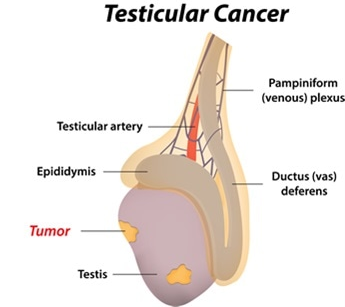

Testicular Cancer is a Cancer that forms in tissues of one or both testicles. Testicular cancer is most common in young or middle-aged men. Most testicular cancers begin in germ cells (cells that make sperm) and are called testicular germ cell tumors.
